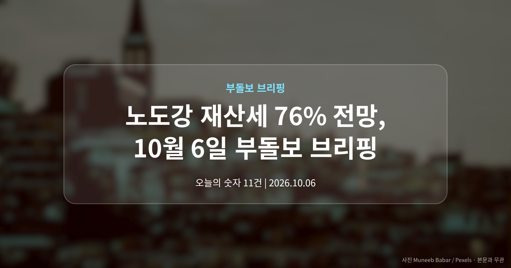
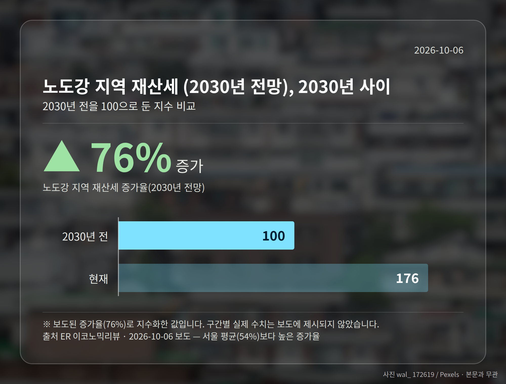
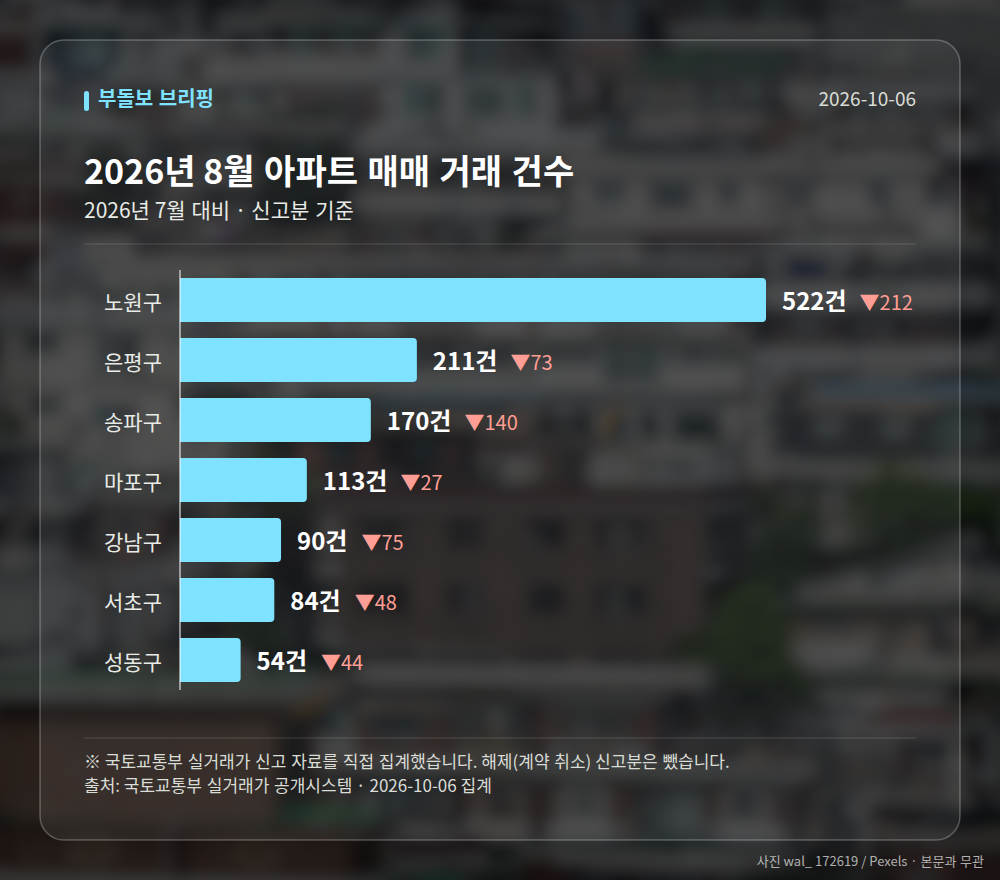

이 글은 2026년 10월 6일 기준으로 정리한 내용입니다. 실거래 수치는 2026년 8월 신고분입니다.
서울 집값이 계속 오른다면 2030년 재산세(집을 보유하고 있을 때 매년 내는 지방세)가 지금보다 크게 뛸 수 있다는 전망이 어제부터 여러 매체를 통해 보도됐습니다. 특히 노도강 재산세는 서울 평균보다 더 큰 폭으로 오를 수 있다는 내용입니다.
다만 이 숫자는 확정된 세액이 아니라 '집값이 계속 오른다면'이라는 가정 위에 올려진 전망치입니다. 오늘은 이 전제를 중심으로 정리해 보겠습니다.

조선비즈 보도에 따르면 이 전망은 서울 집값이 연간 10%씩 계속 오른다는 가정 아래 계산됐습니다. 이 가정대로 간다면 2030년 서울 30평형 아파트 재산세는 54% 오른다는 결과가 나옵니다.
그리고 노원·도봉·강북, 이른바 노도강 지역은 같은 조건에서 76%라는 수치가 제시됐습니다(ER 이코노믹리뷰). 서울 평균보다 20%포인트 이상 높은 셈입니다.
| 구분 | 2030년 재산세 증가율 전망 | 보도 매체 |
|---|---|---|
| 서울 30평형 아파트 | 54% | CBC뉴스·조선비즈 등 |
| 노도강 지역 | 76% | ER 이코노믹리뷰 |
| 서울 주요 아파트 | 50% | 서울경제 |
같은 전망을 다루면서도 매체별 수치는 조금씩 갈립니다. 서울경제는 50%로, 자본시장뉴스는 상승률 가정을 10.3%로 잡아 53.5%라고 보도했습니다.
차이가 크지는 않지만, 이는 어떤 단지·어떤 평형을 기준으로 삼았는지에 따라 결과가 달라진다는 뜻입니다. 제목 중심의 보도여서 구체적인 산출 근거까지는 확인되지 않았습니다.
그래서 노도강 재산세 76%라는 숫자를 그대로 내 고지서에 대입하기는 어렵습니다. 전제가 어긋나면 결과도 달라지기 때문입니다.
의미가 없는 숫자는 아닙니다. 상대적으로 집값이 많이 오른 외곽 지역 1주택자의 보유세 부담이 서울 평균보다 빠르게 늘어날 수 있다는 가능성을 보여주기 때문입니다.
다만 '오른다'가 아니라 '이 조건이면 이렇게 된다'는 조건부 전망입니다. 여러분께 더 실질적인 정보는 올해 받은 고지서의 과세표준과 공시가격 변동 폭일 수 있습니다.
한편 이재명 대통령은 10월 5일 '부동산투기공화국 탈출' 약속을 지키겠다며 투기 억제와 주택 공급 확대 의지를 밝혔습니다. 뉴시스에 따르면 이 대통령은 하루에만 SNS 게시물 11건을 올렸습니다.
서울 8개 구에서 신고된 매매는 1244건입니다. 2026년 7월 2253건과 견주면 -1009건입니다.
거래가 많은 곳: 노원구 522건(-212) · 은평구 211건(-73) · 송파구 170건(-140)
노원구 전세가율(전세 보증금 ÷ 매매가)은 가운뎃값 52.8%입니다. 같은 단지·같은 면적 106곳을 견줬습니다.
서울 25개 구 가운데 거래가 가장 크게 움직인 곳: 중랑구 -61.4%(500→193건, 2026년 7월엔 묵동에 66.2% 몰렸음) · 동작구 -48.7%(238→122건)
2026년 9월 계약 신고가

→ 그림 파일 img-stats-volume.png 을 이 자리에 올리세요
국토교통부 실거래가 신고 자료를 직접 집계했습니다. 해제(계약 취소) 신고분은 뺐습니다.
여러분이 보유하거나 살고 있는 집의 보유세는 최근 몇 년간 어떻게 달라졌나요?
댓글로 알려 주시면 다음 글에 반영하겠습니다.